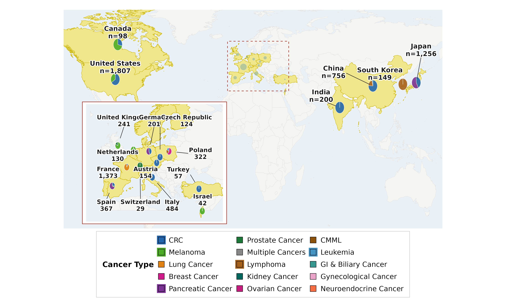
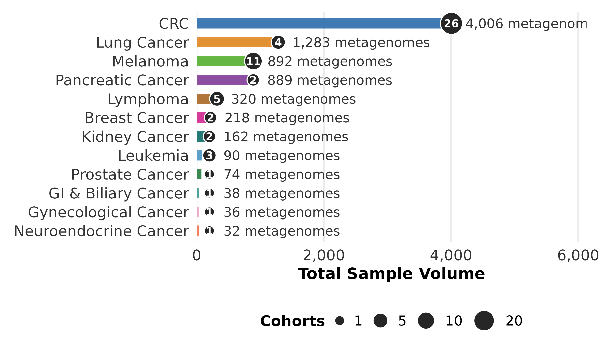
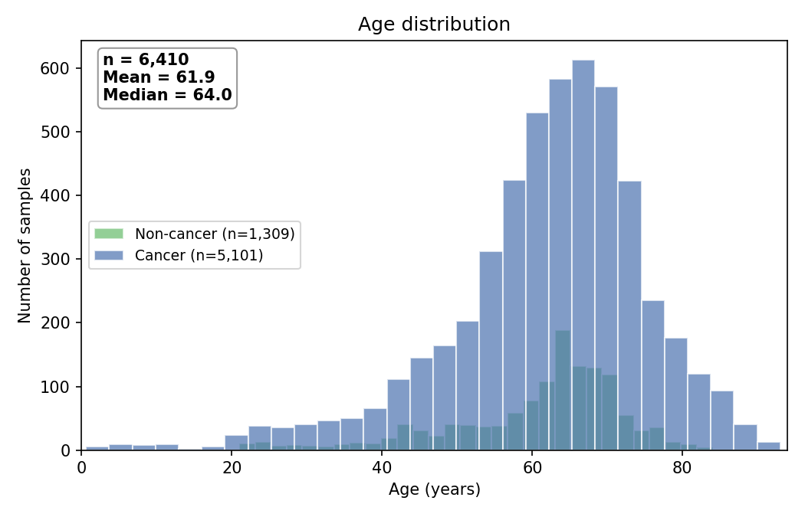
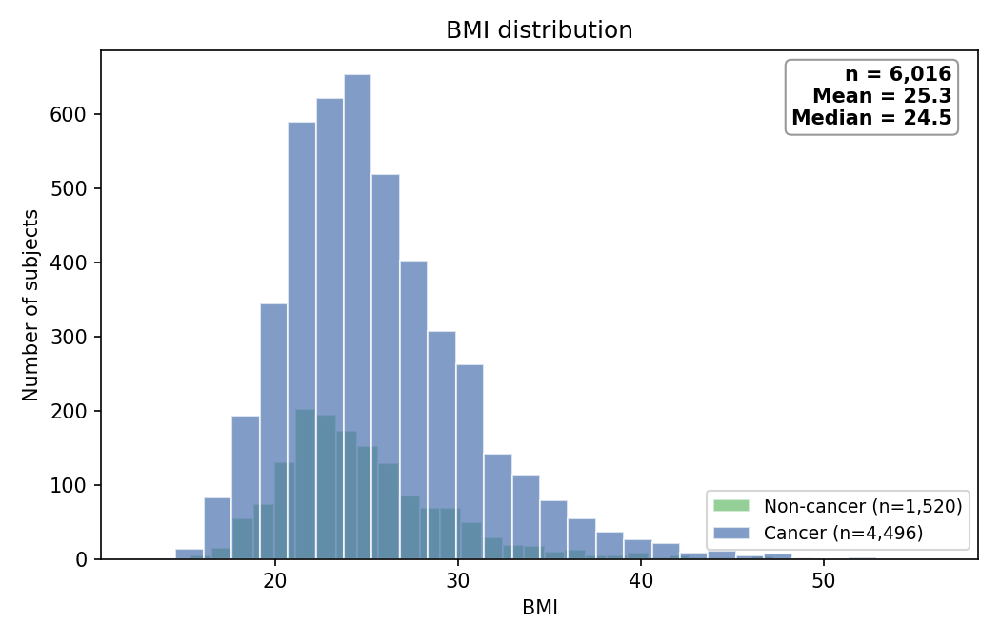

curatedMetagenomicData -- Cancer Datasets Overview
Last updated: 2026-09-08 12:38 UTC
Summary
| Metric | Value |
|---|---|
| Studies | 58 |
| Countries represented | 19 |
| Total samples | 10,415 |
| Subjects | 9,529 1 |
| Cancer-related samples | 8,647 (6,615 malignant, 2,032 precursor lesions) |
| Non-cancer / control samples | 1,656 |
| Studies with repeated sampling per subject | 9 2 |
| Male subjects | 3,836 (52.0%) |
| Female subjects | 3,540 (48.0%) |
| Subjects with sex information | 7,376 / 9,529 (77.4%) — available in 41 / 58 studies |
| Subjects with age information | 6,539 / 9,529 (68.6%) — available in 40 / 58 studies |
| Subjects with BMI information | 6,016 / 9,529 (63.1%) — available in 34 / 58 studies |
Precursor lesions
Adenomas and other pre-malignant lesions are included in the cancer-related total above. They are counted separately in the breakdown.
Countries represented
Austria, Canada, China, Czech Republic, Czechia, France, Germany, India, Israel, Italy, Japan, Netherlands, Poland, South Korea, Spain, Switzerland, Turkey, United Kingdom, United States
Global map

Cancer types

Age distribution

BMI distribution

Studies included
| BarraganJ_2022 | BaruchE_2020 | Chenk_2026 | DavarD_2021 |
| DerosaL_2020 | DerosaL_2022 | DerosaL_2024 | FengQ_2015 |
| FernadesR_2026 | FrankelAE_2017 | GaoR_2021 | GopalakrishnanV_2018 |
| GrionBAR_2024 | GunjurA_2024 | GuptaA_2019 | HanniganGD_2017 |
| KartalE_2022 | KuleckaM_2024 | LeeJWJ_2023 | LeeKA_2022 |
| LubekaN_2024 | LuoY_2024 | MatsonV_2018 | McCulloughJA_2022 |
| NagataN_2022 | NileS_2025 | NofinskaB_2026 | PernigoniN_2021 |
| PetersBA_2019 | PiccinnoG_2025_a | PiccinnoG_2025_b | PiccinnoG_2025_c |
| PiccinnoG_2025_d | PiccinnoG_2025_e | PiccinnoG_2025_f | PoetgensS_2024 |
| RoelandsJ_2023 | RoutyB_2018 | Routy_2023 | ShiZ_2025 |
| SpanogiannopoulosP_2022 | SpencerCN_2021 | Stein-ThoeringerCK_2023 | TengNM_2024 |
| ThomasAM_2019_a | ThomasAM_2019_b | ThomasAM_2019_c | VogtmannE_2016 |
| WindTT_2020 | WirbelJ_2018 | XuJ_2022 | YachidaS_2019 |
| YangJ_2020 | YoonS_2023 | YoonS_2025 | YuJ_2015 |
| ZellerG_2014 | ZhangY_2023 |
-
4,940 of these have an explicit subject identifier in the source metadata. 18 studies do not record subject IDs, so each of their samples counts as one subject and the true number of distinct people is lower. ↩
-
Studies in which at least one subject contributes more than one sample. This includes paired tumour/normal tissue and multi-site sampling, so it is broader than longitudinal follow-up. ↩